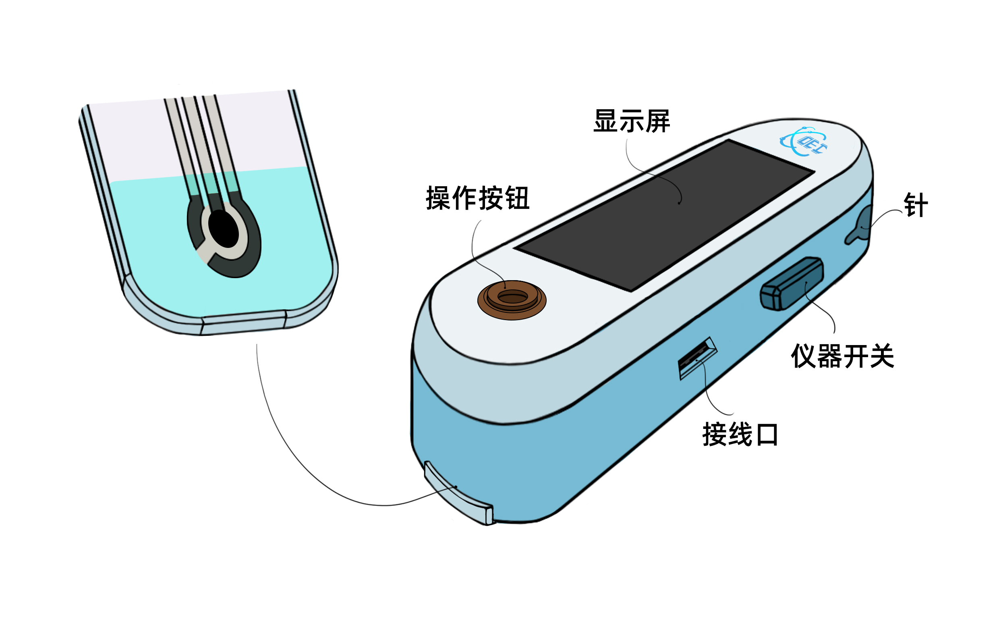
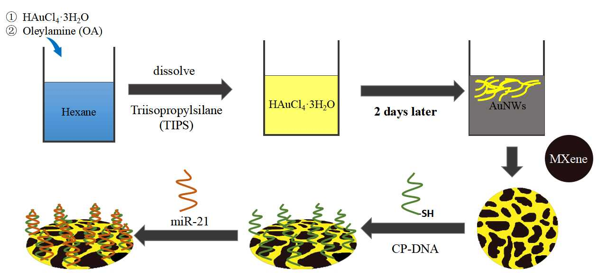

|  |
癌症检测仪金额：检测仪399，检测条80，一套479购买（请点这里） |
产品核心 |
核心技术 |
| （1）通过液体合成法合成网状纳米金，将其与MXene复合，制得网状纳米金-MXene（AuNWs/MXene）纳米复合材料，利用MXene比表面大的特点，丰富材料的活性位点，从而提升癌症检测灵敏度。此外，利用MXene良好的生物相容性保证生物受体的活性，保障癌症检测的稳定性。 （2）以癌症标志物（miR-21）的适体作为特异性生物识别元件、以牛血清白蛋白（BSA）作为空白活性位点封闭剂，逐步搭建电化学免疫传感器，实现癌症检测的特异性。 |
|  |
技术创新 |
|
（1）引入改性AuNWs/MXene纳米复合材料、巧用Au-S使适体自组装锚定于AuNWs/MXene上，极大提高了电极电导性，提升检测灵敏度。 （2）充分利用MXene具有良好的生物相容性的特点，将其作为制备生物传感器的优良载体，保证生物受体的活性。 （3）创新性地将智能手机与电化学免疫传感器相结合，实现癌症早期标志物的现场快检，具有实时性、检测耗时短、小型便携、可自检、准确度高等优点，同时也有利于数据的保存和对比。 |
产品使用 |
使用方法 |
|
（1）开机：按下右侧开机键，稳定仪器。 （2）预备：将检测条从放置仓中抽出，滴血样面朝上，沿箭头方向插入插槽内并推到底，直至听到“滴”的提示音。 （3）采样：打开橡皮塞，取出采血针，手指和采血针均消毒后，请用采血针于手指指尖两侧采血。 （4）拔出检测条，显示屏图标闪烁（血滴和试纸）。 （5）滴样：将血样滴在检测条的测试中央（仅需1-2微升血液），并将其重新插入插槽。 （6）检测：按下“操作”键，开始检测。 （7）查看与记录：待屏幕数值稳定，显示检测结果。扫描检测盒背面二维码，登录查看检测记录。 |
注意事项 |
|
（1）酒精消毒：请用75%酒精消毒指尖，待其挥发后，再用消毒过的采血针进行采血，请勿使用碘酒等含碘消毒液。 （2）合理保存：不要靠近有阳光的地方和潮湿的地方，也不要放在电磁场较强烈的位置，以免检测条受潮或环境温度影响使检测不准确。 （3）弃置与回收：废弃的采血针应盖上预备的针帽再弃置，避免针头裸露，造成扎伤感染；弃置的检测条请勿随意丢弃，可进行就近定点回收。 |
产品功能 |
| 该产品能够监测miRNA-21的异常表达，从而实现癌症的早期检测，解决了目前大多数检测技术灵敏度低的问题。产品具有微型化、集成化、灵敏度高、特异性好等优势，为居家检测和偏远落后地区的癌症检测提供了便利。通过癌症早期检测结果可以做到早发现、早治疗，大大提高患者的生存几率。 |
| 检测结果查看 |